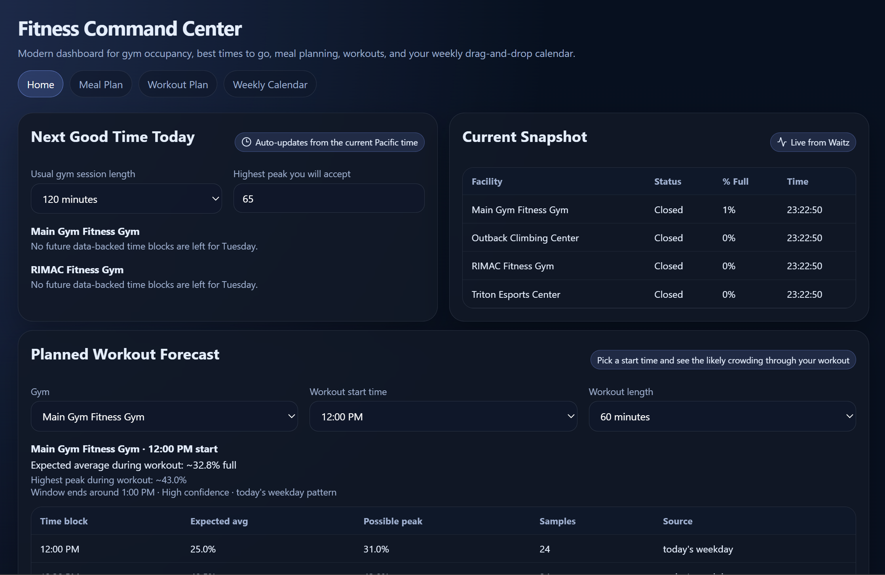

Bad Decisions Analytics
I built this for CSE 135. It collects activity from a test website so I can look at errors, loading times, and how people move through the site.
Focus: Website analytics and reporting.
Computer Engineering student at UC San Diego.
This portfolio has some of the projects I've worked on, along with more about my background. I go over what each project does, how it works, and some of the problems I worked through while building it.
I built this for CSE 135. It collects activity from a test website so I can look at errors, loading times, and how people move through the site.
Focus: Website analytics and reporting.

This dashboard shows how crowded the UCSD gyms are so students can use that information to plan when they want to go.